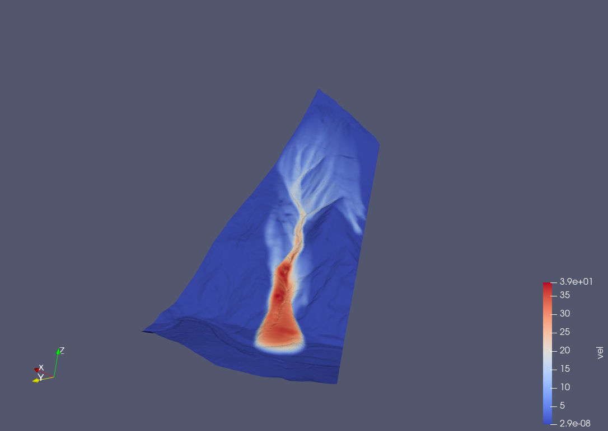
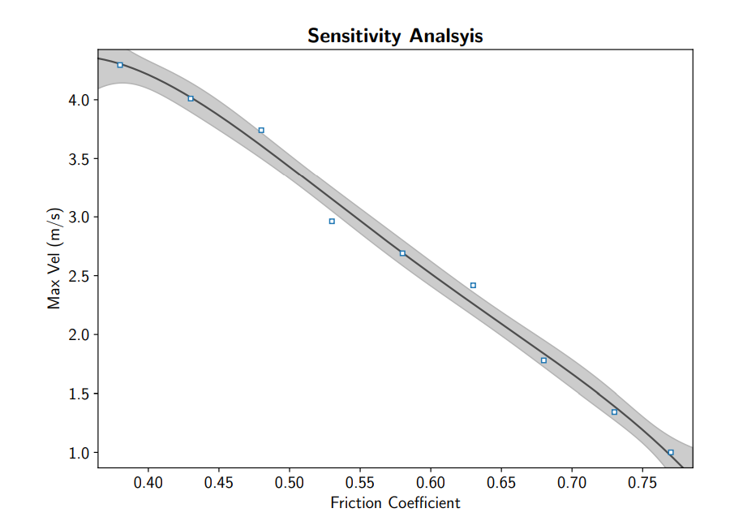

Differentiable Free Surface Flow Solver
GlissADe.jl
A differentiable shallow-flow solver for avalanches, landslides, and floods
[image here: title slide graphic, e.g. an avalanche or debris flow photo]
Why this matters
- Avalanches, landslides, and floods threaten infrastructure and lives. Hazard maps and inundation forecasts guide where we build and how we evacuate.
- Simulators like OpenFOAM-Avalanche, AvaFrame, and r.avaflow already produce these forecasts, and they’re solid tools.
- What they can’t do well: tell you how sensitive their prediction is to a parameter you’re unsure about, or fit that parameter to observed data, without brute-forcing it one run at a time.
[image here: hazard map or inundation zone example]
The gap: gradients
- Sensitivity analysis, calibration, and inverse problems all come down to the same question: how does the output change if I nudge an input?
- The standard way to answer that is finite differences: rerun the whole simulation once per input, perturbed a little. This gets expensive fast as the number of inputs grows.
- Automatic differentiation answers the same question in close to the cost of one run, no matter how many inputs you’re asking about.
- GlissADe.jl adds this capability to a shallow-flow solver built on a real depth-integrated model, not a toy.
The governing equations

- Built on the surface-aligned, depth-integrated Savage-Hutter equations from Rauter and Tuković (Rauter and Tuković 2018).
- Mass and momentum balance, written on a curved surface rather than a flat plane, so it can handle real terrain.
\[ \scriptsize \frac{\partial h}{\partial t} + \nabla \cdot (h\bar{u}) = 0 \; (1) \] \[ \scriptsize \frac{\partial h\bar{u}}{\partial t} + \xi\;\nabla_s\cdot (h\bar{u}\bar{u}) = \]
\[ \scriptsize -\frac{1}{\rho}\tau_b + h\textbf{g}_s -\frac{\alpha}{\rho}\;\nabla_s (hp_b) \; (2) \]
\[ \scriptsize \xi\;\nabla_n\cdot(h\bar{u}\bar{u}) = h\textbf{g}_n \]
\[ \scriptsize - \frac{\alpha}{\rho}\nabla_n(hp_b) - \frac{1}{\rho}\;\textbf{n}_b\;p_b \; (3) \]
How the solver is built

- A Finite Area Method, the same style OpenFOAM uses for its
faMesh: cell-centered fields on an unstructured mesh. - Each time step is a segregated solve: update pressure, then momentum, then thickness, iterating until it converges.
- Every implicit update boils down to solving a sparse linear system.
How we made it differentiable
- Every field in the solver (thickness, velocity, pressure) is generically typed, so when you hand it a
Dualnumber, the whole solve just works. No rewrite needed. - The one place that doesn’t come for free: the linear solve. Running dual numbers through an iterative solver like GMRES is wasteful and can be numerically shaky.
- Instead, we differentiate the equation \(Au = b\) directly: \(A\,du/dx = db/dx - (dA/dx)\,u\), and solve that using the factorization we already computed for the primal solve. This is a known technique (see Martins and Ning (2021), the “AD shortcuts for matrix operations” section), and it’s the part of the code we’re proudest of.
Handling the awkward parts
- Real solvers have kinks that autodiff is supposed to hate: switching between upwind and central differencing depending on flow direction.
- It turns out fine here: dual numbers pick the branch by the sign of their value, same as a plain float would, so the derivative comes out right without any special-casing.
- In-place updates (
.=,+=) on the state arrays are no problem either, since it’s all just operator overloading under the hood. - We check this isn’t just a nice theory: every gradient we compute is validated against finite differences in the test suite.
Demo: sensitivity analysis

- Example: maximum flow velocity as a function of the basal friction coefficient, computed on the simpleslope case.
- To be clear about scope: this is a sensitivity study of a physical parameter, not a full uncertainty quantification of terrain. That’s further out, see the last slide.
Where this stands today
- Forward-mode only. Cost grows with the number of things you differentiate with respect to, so this is great for a handful of parameters, not for thousands of mesh nodes.
- The linear solve runs on a single core. The Krylov iteration is inherently sequential, and the ILU preconditioner’s triangular solves have a row-by-row dependency chain that isn’t parallelized here.
- Only planar mesh elements are supported, so sharp terrain curvature isn’t handled yet.
- This started as a research internship project. It’s a working prototype that proves the idea, not a production tool yet.
Where this could go
- Reverse-mode AD via Enzyme.jl, with custom rules for the linear solve (the adjoint counterpart to what we built, see Martins and Ning (2021) on direct vs. adjoint methods). This is what would make differentiating w.r.t. thousands of terrain points tractable.
- The N sequential solves per gradient direction are independent of each other and could run in parallel, once the solver’s shared workspace is refactored to allow it.
- Topographic uncertainty quantification is the natural next step, but it raises a real question first: DEM uncertainty comes as a raster grid, while the solver’s state lives on an unstructured mesh. Mapping one onto the other introduces its own error. Worth asking whether a structured-grid solver would be a better fit than sticking with the Finite Area Method.
- A more general conservation-law form, so the solver isn’t limited to this one physical model:
\[ \frac{\partial Q}{\partial t} + M_f\;\nabla\cdot f(Q) + M_g\nabla\;g(Q) = S(Q) \]
- Conservative flux: \(f(Q)\)
- Gradient sources: \(g(Q)\)
- Constant sources: \(S(Q)\)
- Parameters: \(M_f\;,\; M_g\)